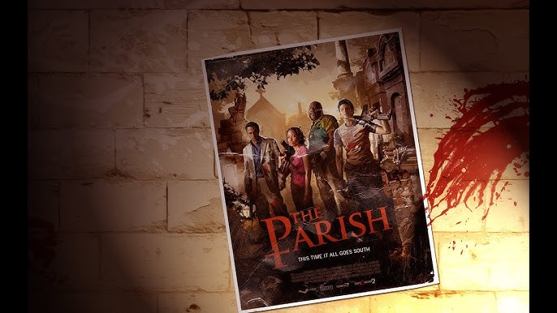
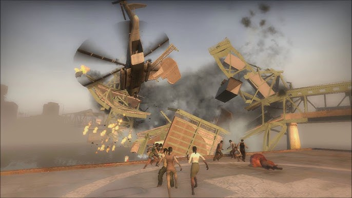

La campaña "The Parish" comienza con los sobrevivientes: Coach, Ellis, Nick y Rochelle desembarcando del bote en el paseo marítimo de Nueva Orleans. Su objetivo es atravesar la ciudad devastada y llegar a un punto de evacuación del otro lado de la ciudad esperando ser rescatados por el ejército. En el inicio los sobrevivientes viajan por las calles cercanas a los muelles encontrando calles cerradas y edificios abandonados además que la cantidad de infectados en este sitio no era normal.

Después de cruzar las calles los sobrevivientes llegan a un parque que parque está lleno de zombis. Pasado el parque se encuentran con un puesto de evacuación, pero esta vez no es de la C.E.D.A. sino del gobierno y junto a este hay cuerpos muertos que no pertenecen a infectados. Activando la alarma del puesto del gobierno los sobrevivientes logran burlar la ola para dirigirse a su siguiente refugio temporal, evitando el bombardeo que esta cayendo en la ciudad.
Los sobrevivientes continúan hasta llegar al Barrio Francés de Nueva Orleans. Utilizando los balcones y las estructuras de una festividad que se estaba llevando a cabo los sobrevivientes se hacen paso por esta zona, destruyendo edificios en el camino. Debido a toda esa destrucción que estaban generando los zombis pudieron acabar con los sobrevivientes.
Llegados un puente elevadizo el final de la campaña se convierte en una carrera contra el tiempo para cruzar el puente y llegar punto de evacuación. El gobierno había decidido derrumbar el puente y aunque los sobrevivientes se encontraran ahí ellos no planeaban cambiar sus planes. Por fortuna o no de los sobrevivientes ellos lograron cruzar el mapa e irse con los militares, dando así fin al juego Left 4 Dead 2.
